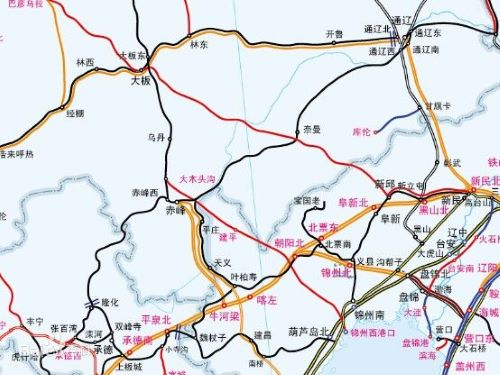
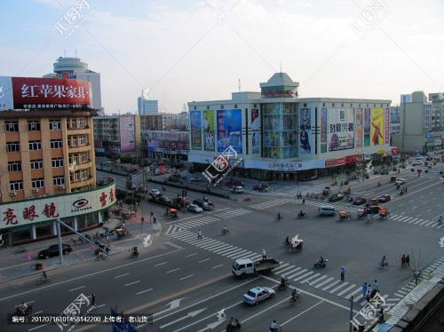

家乡文化普及之
通辽名字的由来
通辽——为什么叫通辽？
一看这个带谐音的地名——通辽，人们就知道，它的崛起与铁路密切相关
确实，内蒙古通辽，以前是个无名小镇
据说1921年第一条铁路修通，“火车通了（辽）”
于是，人们便把这个地方叫通辽
也有说因为这里铁路四通八达，很是辽阔，所以叫通辽
“通辽”二字作为地名，其沿用的历史并不久远，至今才百余年

| |
关于内蒙古自治区(辟谣特别专栏)
说到内蒙古，很多不了解的人的第一印象就是
哇，是不是有草原?！
哇，你们是不是住在蒙古包里?！
哇，你们上学时骑马🐴去嘛?！
你是蒙古族的吗？！
内蒙古确实有草原，有蒙古包，但是......
内蒙也有很多城市
内蒙的汉族人比蒙古族还要多，占总人口的80%
我们的交通工具也是汽车🚕
所以以后不要在对内蒙的理解以偏概全啦
多元的民族文化
由于特殊的地理位置
通辽的民族种类很多
汉族，蒙古族，回族，鄂温克族等等
多样的民族文化交汇在一起，形成了通辽人淳朴的民风
此外，由于多样的民族文化
通辽的饮食也多种多样（详情请看上面导航栏中的美食一栏）
通辽市还开创为少数民族建立的学校
力争做到各族人民教育平等
促进各民族共同繁荣发展

|